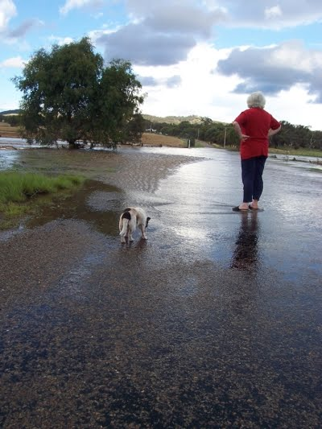

Home
News for 2010
________________________________________________
Wettish
December 12 2010
We've survived the rain so far, but things got a bit wet around Rye Park:

Plus in other news, the residents of Cluckingham Palace are feeding well. So well in fact that we had to expand our vege tunnel into a rectangle, thus re-naming it The Vege Enclosure:
Happy Xmas to all,
Steve
________________________________________________
Cluckingham Palace
November 11 2010
It's been quite a while since I've posted, but we've been busy all the same. 3 main developments:
1 - We've finally got our chooks and they're housed in an old dog-kennel that was in the back paddock:
2 - I've finished Lesley's half of the new shed, which she is using as a craft studio:
and 3 - Ryan has moved here on a permanent basis and will be doing computer studies through the correspondence arm of TAFE.
________________________________________________
Alpacas Arrive
August 13 2010
We've finally acquired our much-planned alpacas Archie and Monty. We brought them from the Southern Highlands in a horse float"
________________________________________________
Very Nice Holiday
May 8 2010
Here is where we stayed in the Megalong:
And here is where I'm up to with the shed:
It was great to see Mum and Dad on Dad's Birthday - pity about the surroundings, which were un-planned owing to a mechanical breakdown. But the car was fixed and we made it home to Rye Park that night...
________________________________________________
Tomatoes In
April 13 2010
We got our first frost this morning, a very mild one, so Lesley brought in all the tomatoes:
________________________________________________
Shed Progressing
March 20 2010,
Finally I've finished the outer shell of the shed:
This meant that I could start pouring the dirt floor:
It's fairly clayey soil and probably would have been okay without cement, but I gave it 1:10 cement to be on the safe side.
Meanwhile, after Kath's Cabin went next-door to become Gary's cabin, I was able to continue the alignment of the toilet pipe that we put between the septic and the cabin. To cover it while gradually inclining towards the house I built a retaining wall behind which we have herbs and veges. The pipe now only has 3 metres till it gets to where our propose inside toilet is to go:
________________________________________________
Fountain installed
March 4 2010,
We bought it a month or so ago and took a little time putting a garden around it (Violets). We put a picnic pergola over it for the time being to cut down on evaporation, but later will build a metal dome for wisteria to grow over it...
Good on Lesley for insisting on getting a fountain - it's lovely to hear the water trickling.
________________________________________________
Kath
January 10 2010,
Kath has now moved permanently to the nursing home at Boorowa Hospital. Unfortunately she hasn't bounced back from her bad spell at the time of my birthday, so we decided she needs to be in full-time care. It's great that she's still close by and we can visit her whenever we like.
We got a few great photos with the kids:
She only got to spend a few weeks in the cabin:
But at least having Kath here meant we upgraded our water supply (the gravity-feed from the "old" new tank that went up the back is brilliant - especially in our all-too-frequent power-cuts when the pressure pump wouldn't be working!) It looks like Gary next door will want to buy the cabin as he's currently living up the back in a very small caravan.
Also, thanks to Andrew for a great shot of the new verandah, taken the day after my 50th:
________________________________________________
Home
House
October 2013
Asbestos
Verandah
Tanks
Fort Veg
Orchard
Pacas